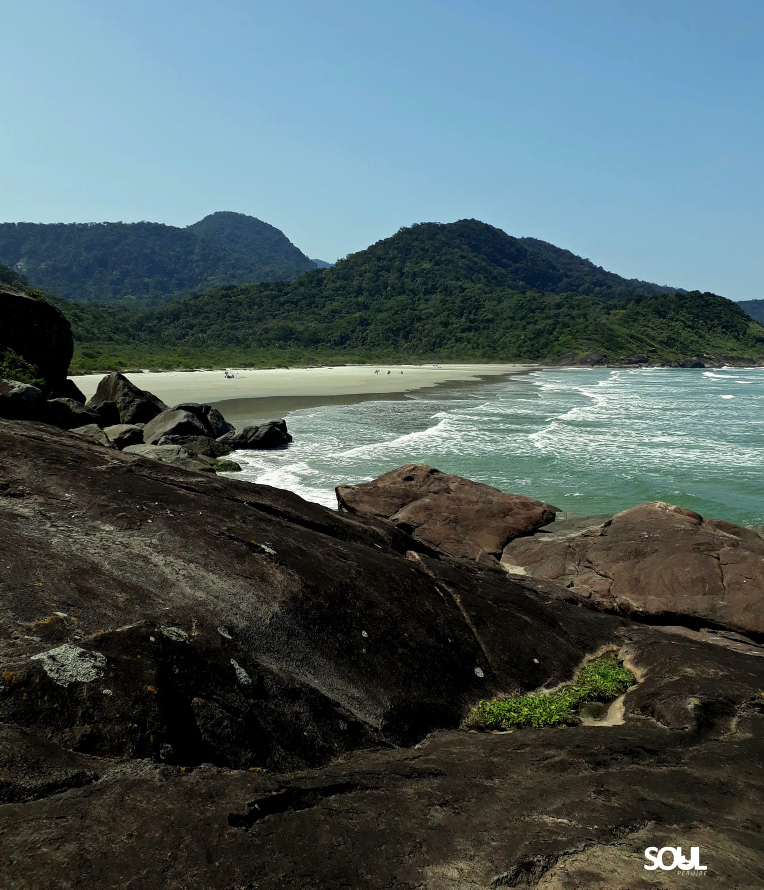

História

A origem de Peruíbe está vinculada à história de São Vicente e, em especial, à trajetória dos jesuítas pelo litoral do Estado de São Paulo.
No século XVI, uma missão jesuítica estabeleceu-se no local que recebeu o nome de Aldeamento de São João Batista, ou São João da Aldeia, cujo objetivo, além de converter e pacificar os índios Carijós e Tamoios, que viviam ao sul da capitania de Itanhaém, era o de servir como pouso a viajantes. Situava-se em uma região estratégica na defesa contra investidas de corsários.
No final do século XVIII, com a expulsão dos padres jesuítas, a aldeia passou a ser administrada pelos franciscanos o núcleo de Peruíbe entrou em declínio.
Só retomou o desenvolvimento como cidade balneária em meados do século XX, quando foi transformada por lei, em 18 de fevereiro de 1959, em distrito e município, com território desmembrado de Itanhaém. Peruíbe, em tupi-guarani, significa "no rio dos tubarões".
Consta, porém, de alguns documentos que esse nome estaria associado ao modo como José de Anchieta se referia ao lugar, chamando-o de Tapirema do Peru, por suas semelhanças com a região peruana, onde os jesuítas haviam enfrentado dificuldades no exercício da catequese.
A trajetória de Peruíbe foi marcada por períodos de crescimento e retração. A presença das missões religiosas e o uso do povoado como ponto de apoio para viajantes deram à localidade importância no litoral, mas a expulsão dos jesuítas alterou essa dinâmica. Mais tarde, sua transformação em município retomou o desenvolvimento e consolidou uma nova etapa da história local.
O vínculo histórico com Itanhaém também ajuda a situar essa formação: por muitos anos, a área esteve ligada administrativamente ao município vizinho, até conquistar autonomia. Já a paisagem costeira e a proximidade com o mar contribuíram para que Peruíbe se desenvolvesse como balneário, conectando sua história à expansão do turismo no litoral paulista.